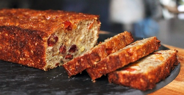
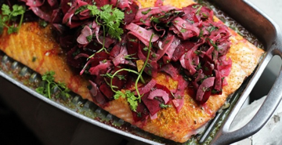
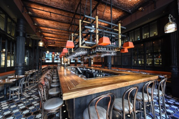
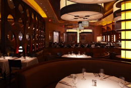

Gila De Lauren
She is an Italian-born American chef, writer, television personality, and the host of the current Food Network television program Food Paradise
NEWSLETTER
SHOP
READ
FOLLOW HER
WATCH
+
Let's get cooking!

Bar Americain's Pickled Shrimp Deviled Eggs with Cornichon Remoulade

Turkey Roulade with "Stovetop" Stuffing
Pasta with Fresh Tomato Sauce
Specials of this season
Barbeque: Cali Style

You've undoubtedly heard of Carolina Barbeque and Texas BBQ but have you ever tried Santa Maria Barberque? Unlike the aforementioned styles, Santa Maria Barbeque doesn't involve a long, slow cooking method or sweet sauces, but is instead a menu featuring a well-seasoned California tri-tip cooked over native red oak coals on a special hand-cranked grill, accompanied by pinquinto beans, salsa, green salad, and garlic bread.
The Perfect Fruitcake
The poor, maligned fruit cake...probably one of the most hated cakes in the existence of baking. Is it any wonder? Would you want an incredibly dense, overly sweet, horribly boozy "cake" chock-full of fluorescent-colored candied fruit pieces?
Spice-Crusted Salmon: A Holiday Dinner That's As Impressive As It Is Quick
Holiday season is well underway, and you know what that means: people are BUSY! With that in mind, I developed a festive recipe that's quick enough to serve on a weeknight (with some make-aheads), and beautiful and impressive enough to serve as the centerpiece for a holiday meal.
DELI BAR

156 Lafayette Street
New York, NY 10012
212 677 6400
delibar.com
BAR NEW YORK

756 W. 52nd Street
New York, NY 10019
214 265 8900
bar-new-york.com
BAR TOKIO SUN

11 Mohegan Sun Boulevard
Uncasville, CT 06382
756 862 3529
tokiosun.com
Restaurants
Guest blogging
Rhubarb: The Vegetable That Acts Like A Fruit
May is all about vegetables on bobbyflay.com and one of the most popular springtime vegetables is rhubarb. That's right, I said vegetable. Did you know that rhubarb is actually a vegetable, not a fruit?
While rhubarb is typically treated like a fruit and most often shows up in desserts in this country, it is also very good in savory dishes too and when used in glazes and chutneys pairs really well with pork, lamb and chicken. But, since I could like on pastries (and often do) I love using rhubarb in a variety of desserts.
Spice-Crusted Salmon: A Holiday Dinner That's As Impressive As It Is Quick
Holiday season is well underway, and you know what that means: people are BUSY! With that in mind, I developed a festive recipe that's quick enough to serve on a weeknight (with some make-aheads), and beautiful and impressive enough to serve as the centerpiece for a holiday meal.
We love to serve a whole side of fish -- it makes for a gorgeous presentation and it feeds a crowd. This one has a spice rub that does double duty, as seasoning for the salmon and as a coating for spiced nuts that get stirred into fluffy jasmine rice.
A New Favorite Take on an Old Mediterranean Grain

Packed with complex carbohydrates and fiber, delicious and hearty whole grains play an important part in the Mediterranean diet. Look beyond rice and pasta, because it's worth getting to know farro, amaranth, millet, freekah and wheat berries...
Some images of this example were taken from: http://bobbyflay.com. All reserved rights.